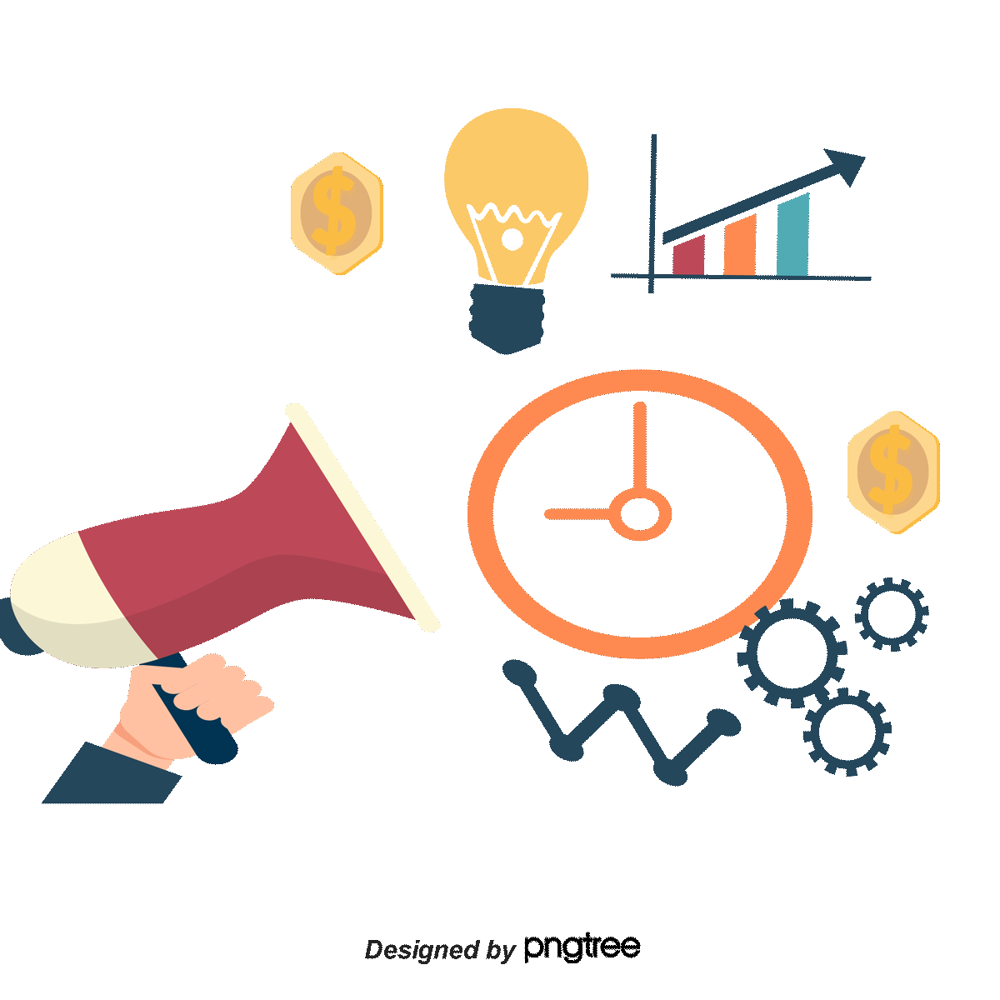

I.III Gestión empresarial.

La gestión empresarial se refiere al conjunto de actividades,
procesos y enfoques utilizados para dirigir y administrar una
organización con el fin de lograr sus objetivos y maximizar su éxito. Es un campo multidisciplinario que abarca diversas áreas
funcionales, como la gestión de recursos humanos, la gestión financiera, la gestión de operaciones, el marketing y la estrategia empresarial.
La gestión empresarial implica tomar decisiones estratégicas, planificar y organizar recursos, dirigir y coordinar actividades, y evaluar
el rendimiento para garantizar el logro de los objetivos establecidos. Algunos aspectos clave de la gestión empresarial incluyen:
-
Toma de decisiones estratégicas:
La gestión empresarial implica la identificación y selección de metas y objetivos
estratégicos a largo plazo para la organización. Esto implica evaluar el entorno empresarial, identificar oportunidades y desafíos, y desarrollar
estrategias para alcanzar una ventaja competitiva.
-
Planificación y organización:
La gestión empresarial implica desarrollar planes y programas para lograr los objetivos establecidos. Esto incluye la
planificación estratégica, la planificación operativa
y la asignación de recursos de manera efectiva. Además, implica organizar la estructura de la
organización, los roles y responsabilidades, y establecer sistemas de coordinación y comunicación.
-
Dirección y liderazgo:
La gestión empresarial implica dirigir y motivar a los empleados para que trabajen hacia el logro de los objetivos
de la organización. Esto incluye establecer políticas y procedimientos,
comunicar de manera efectiva, brindar orientación y supervisión,
y fomentar un entorno de trabajo colaborativo.
-
Gestión de recursos:
La gestión empresarial involucra la gestión eficiente de los recursos disponibles, como el talento humano,
el capital, los activos y la tecnología. Esto incluye la gestión
de recursos humanos para reclutar, capacitar y retener al personal
adecuado, la gestión financiera para administrar los recursos monetarios y la gestión de operaciones para optimizar los procesos y la cadena
de suministro.
-
Control y evaluación del rendimiento:
La gestión empresarial implica establecer sistemas de control y evaluación para monitorear y medir
el rendimiento de la organización en relación con los objetivos establecidos. Esto permite identificar desviaciones, tomar medidas
correctivas y mejorar continuamente el desempeño.
La gestión empresarial es esencial para el éxito y la sostenibilidad de una organización en un entorno empresarial cada vez más competitivo y complejo. Requiere una combinación de habilidades gerenciales, conocimientos técnicos y capacidad para tomar decisiones estratégicas. Una gestión empresarial efectiva permite a las organizaciones adaptarse, crecer y prosperar en un entorno empresarial dinámico.